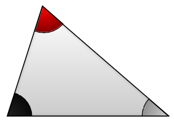
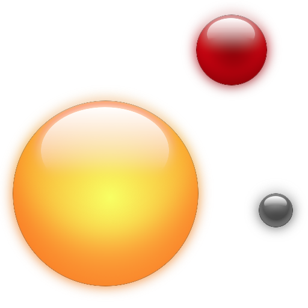
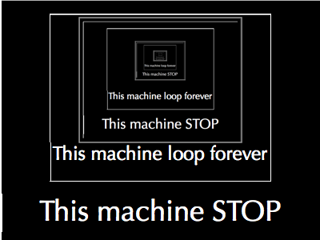

Undecidabilities (part 1)
<% # toremove_ %>
tl;dr: I pretend to create a world to give examples of different meanings behind the word undecidability:
- Undecidability due to measure errors,
- Big errors resulting from small initial measure error,
- Fractal undecidability ;
- Logic Undecidability.
The Undecidabilities
If a demiurge made our world, he certainly had a great sense of humor. After this read, you should be convinced. I’ll pretend to be him. I’ll create a simplified world. A world that obey to simple mathematical rules. And I’ll tell you about one of the curse on this world: the undecidability. The inability to know if we had find the truth. The inability to predict many things that should be natural. Here begin the story.
In the beginning there was only void. Then a blog post beginning to be written. I breath profoundly to feel the weight of the act I will accomplish. A last tense moment and… I create the Universe. An incredible Universe which will exists only the time of this read. I’m the demiurge of this universe and you are its observer.
I construct this world using only simples rules. I decide that real rules of this world will be the one we believe are true for our world. Note the difference. For their world, everything we believe today is true for them. Their world is then probably simpler than our. Particularly, we can describe this world with axioms and mathematic rules. It is not so sure for our Universe. But we’ll talk about that later.
Lets the work begin. I create an Earth. I populate it with intelligent people, the Ys. Of course they are curious. In particular they try to understand their world. They believe that if they know the rules of their world they will be able to predict the consequences of most of their acts. They are so naive. If only they knew. But I’m here to help them.
I am a God who likes jokes. The first joke I make to Ys is to make their sense imperfect. Furthermore it is not possible to make perfect precise measure in my world. I let Ys ameliorate their technology but there is a theoretical limit to the best precision they can reach.
I’d like to precise that these people believe their world is flat. Some believe it is possible to find the rules of their Universe. Now, let the game begins.
Lets start easily, errors can cause undecidability.
Undecidability due to measure errors
Here is what one of them think:
All triangle I observe seems to share the same property. Each time I sum up their angles I obtain π radiants (180°). It is certainly a rule of my Universe. But how to be certain all triangle in my Universe share this property?

Some began to formalize the problem. They end by writing a mathematical proof. Marvelous! The proof seems correct, but, a problem remains. The proof is based on rules and axioms. How to be certain these rules and axioms are right in their world? They will try to measure again and again the sum of the angles of triangles. The measure will never fail. But they’ll never be certain the rules and axioms are right. Because then only way to verify all axioms depends of observation. And as a facetious god, I forbid perfect measure in observation.
Of course, they prey, they call me to help. And as any respectful god, I don’t answer. Ah ah ah! I’ve always loved to make these kind of thing. Let’s act as if I don’t exists. What a good joke!
They feel sad. But they have some hope:
Hope
If we make small measure error, we will make small predictive error.
Growing errors Undecidability

Unfortunately, the three bodies problem will crush this hope. Using Newton’s Universal Law of gravitation with two bodies, we can predict with precision what will be their position and speed in the future. Until there all seems OK. But now, add another body. All errors will grow. Errors will grow at a point that any prediction will be unusable.
Even with this bad news there is the hope to control the error.
May we should know the maximal measure error we can handle to predict something. And we should at least determine what we can predict and what we cannot.
Once again, this should not terminate has they hope.
Fractal Undecidability
Consider the following question:
Consider some GPS coordinates on a point around the cost of the “Bretagne” in France. The coordinates are 3 feet precise. Is the point in the water or on Earth?
For some coordinates it is not possible to know. Even if we are authorize to move a bit to dodge the borders. Because there are some zone in which all point could be a “border” for any size of the zone.
We can even imagine some mathematical structure where all points are at the border1.
Logical Undecidability

Until there all problem were undecidable because of measure errors. May be in a controlled world without any error we should be able to predict anything.
I’m sorry to say no. Even in a self-contained mathematical world it can be possible to create object with an unpredictable behaviour.
It is the halting problem.
Theorem: It is undecidable given a description of a program, whether the program finishes running or will run forever. The idea of the proof is simple enough to be part of this article. And this is with pleasure I give you one here.
Suppose a program able to decide if any program halt exists. More precisely:
Hypothesis: there exists a program
Psuch that:
P(x,y)return “stop” in a finite amount of time ifx(y)2 will stop running.P(x,y)return “loop” in a finite amount of time ifx(y)will never stop running.Remark: Any program can be represented as a string. Therefore, a program can be used as the input of another program. It is authorized to write
P(x,x).Let
Qbe the following program using the return value ofP.Q(x) : if P(x,x)="stop" then I enter in an infinite loop if P(x,x)="loop" then I stopNow, what is the value of
P(Q,Q)?
- if
P(Q,Q)returns “stop” that imply by construction ofQthatP(Q,Q)returns “loop”.- if
P(Q,Q)returns “loop” that means by construction ofQthatP(Q,Q)return “stop”.Therefore there is a contradiction the only way to handle is by the non existence of the program
P.
I am the demiurge of this imaginary world. And I cannot know the future of this world. Therefore, creative power isn’t equivalent to omnipotence.
After all this, it becomes difficult to know what we can believe. But it would be another error to throw away all our knowledge. In a future next part, I’ll explain what we can hope and what attitude we should have once we’ve realized most of truth are unaccessible.